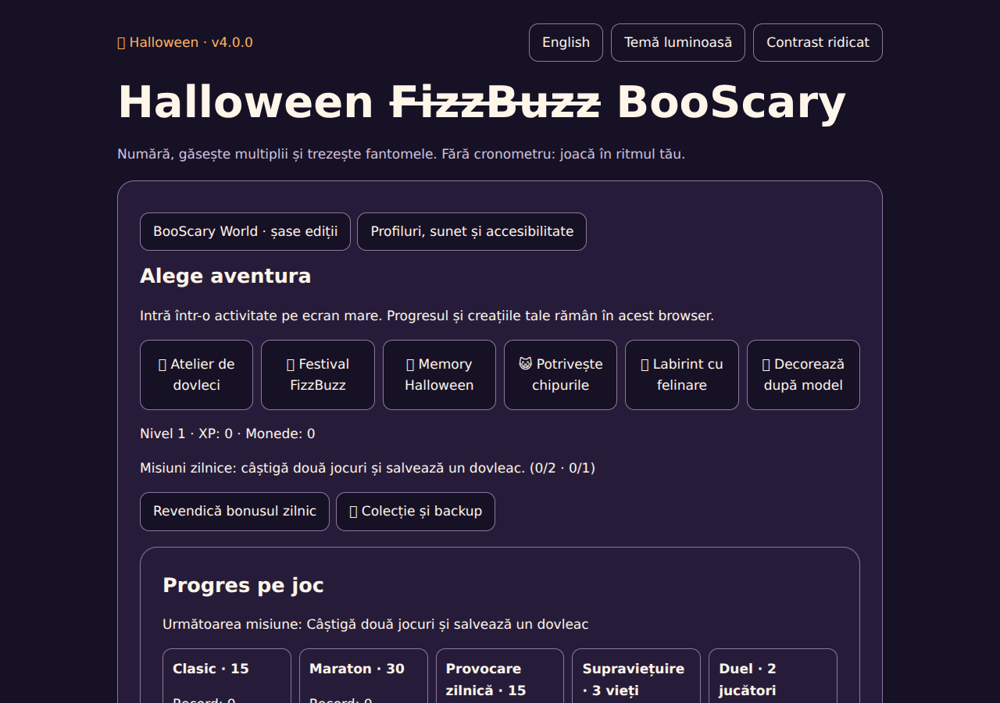
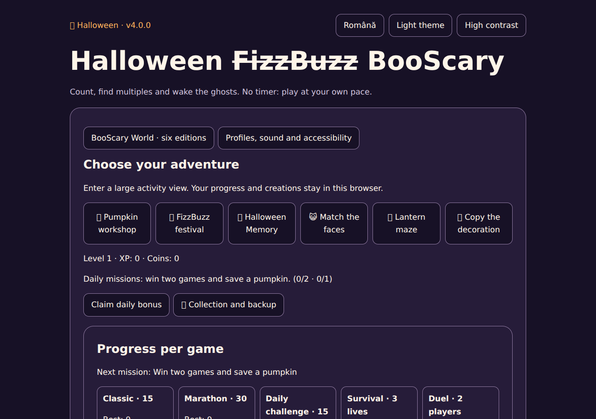

De la FizzBuzz la un festival creativ
Challenge-ul pornește de la regulile 3 → Boo, 5 → Scary, 15 → BooScary. Evoluția adaugă atelierul de cioplit, pictat și aprins dovleci, șase ediții și o poveste în șase capitole.
22 de probe noi au dificultate 1–10: memorie, umbre, simetrie, secvențe, labirint generat, colecționare, sortare, vocabular și variații FizzBuzz. Sunt probe accesibile, bazate pe ture, cu indicii.

Atelierul include forme, straturi, texturi, spray, gradient, simetrie, decorațiuni mobile, vreme și lumini. Galeria are albume și favorite. Exporturi: SVG, PNG, felicitare, poster, planșă de colorat și colecție.
A creative Halloween festival
Six editions combine a pumpkin studio, the original FizzBuzz activities, 22 new turn-based challenges and a six-chapter story. Four local profiles preserve unfinished work, albums, progression and validated backups.

Offline PWA, optional synthesized music, voice guidance, keyboard controls, high contrast and reduced motion. Same-screen party modes are local; manual WebRTC sharing requires a compatible network and has no TURN relay.
Verificare / Validation
314 verificări de logică, regresie browser, toate cele 22 de probe, generarea a 20 de labirinturi, exporturi, profiluri, backupuri validate și reîncărcare offline. Touch emulat; telefonul fizic, cititorul de ecran și conexiunea între rețele rămân de verificat.
Istoric complet / Full history